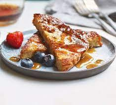

French Toast Recipe

Ingredients:
- 4 slices of bread
- 2 eggs
- 1/2 cup milk
- 1 teaspoon vanilla extract
- 1/2 teaspoon cinnamon
- Butter for cooking
- Maple syrup for serving
Instructions:
- In a bowl, whisk together eggs, milk, vanilla extract, and cinnamon.
- Heat a skillet or griddle over medium heat and add butter.
- Dip each slice of bread into the egg mixture, coating both sides.
- Cook each slice until golden brown on both sides.
- Serve hot with maple syrup.